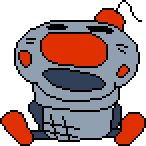
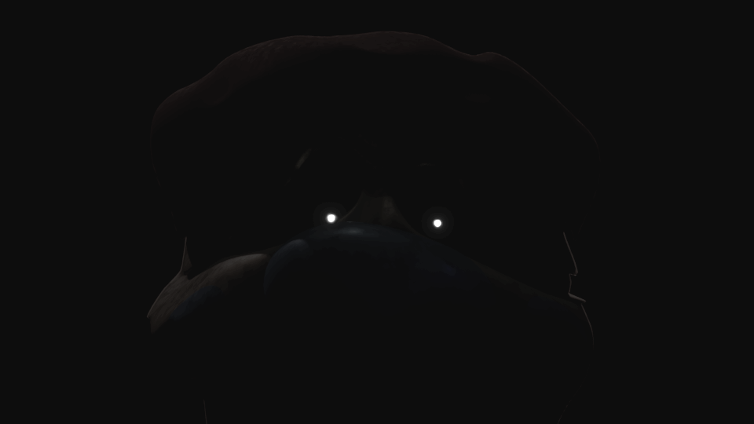

This is the music that plays in the Void Room, as well as several secret areas. It's taken from the Yume Nikki OST.
The Void Room can be accessed in the same way as in v1.1. However, you will now be met with an infinitely looping white plane with only occasional decoration. Shadow Pizzaboy can be found by running far enough in either direction.
Shadow Pizzaboy is a new entity that can be found in the Void Room.
Dialog:
Silver Coneboy is a new entity that appears on top of the tower once you've collected all 8 Keys. He says a line of dialog and closes your game, resetting your keys in the process.
"when will you learn?"
A room containing this image is present in the files. It can't be accessed normally. (Image brightened for clarity)
